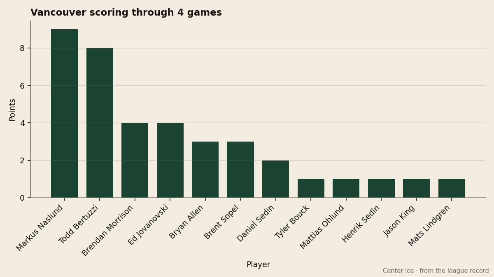
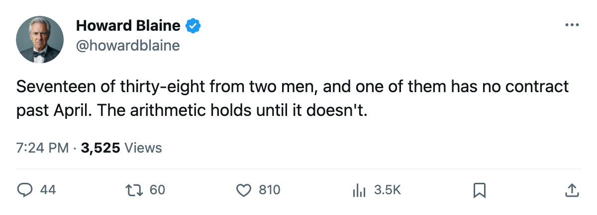
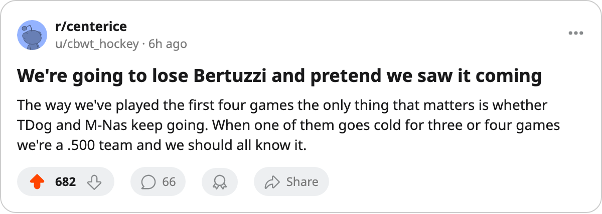

The Load-Bearing Pair: Vancouver's Two-Man Offense Runs on Contracts That End in April
Naslund and Bertuzzi have combined for 17 of Vancouver's 38 points in 4 games, and Bertuzzi's deal has 0 years left at $2.60M.
 Howard BlaineSenior writer, The Blaine Rankings · The Hockey Gazette
Howard BlaineSenior writer, The Blaine Rankings · The Hockey Gazette
 Vancouver Canucks has produced 5 standings points on a $46.36M payroll, and the league's second-best rate of $9.27M per point sits behind two names:
Vancouver Canucks has produced 5 standings points on a $46.36M payroll, and the league's second-best rate of $9.27M per point sits behind two names:  Markus Naslund91 at 9 points and
Markus Naslund91 at 9 points and  Todd Bertuzzi93 at 8. The next man is
Todd Bertuzzi93 at 8. The next man is  Ed Jovanovski88 with 4.
Ed Jovanovski88 with 4.
The efficiency number is real, but Bertuzzi's contract carries 0 years left at $2.60M, and the model that makes Vancouver the West's cheapest producer of points stops working the moment he leaves or reprices.

What the top two carry
Naslund, 32, has 4 goals and 5 assists through 4 games, good for a pace of 184 over 82. He won the Hart last season on 138 points, and at 20.8 minutes a night he is carrying the load the Book still says he can: a 91 overall, one point below his base on the Development Index. Bertuzzi, 30, leads the team in goals at 5 and has a 93 overall, the highest grade on the roster. His 8 points in 4 games put him at a 164 pace.
The two of them account for 9 of Vancouver's 13 goals through the first week. No other pair in the league is on that share of their club's goal production through 4 games, though the sample is small enough that the desk will not call it a season pattern yet.
The third line down tells the other half of the story.  Brendan Morrison83 has 4 points on the team's second-highest salary among skaters. Daniel Sedin and Henrik Sedin, both 25, have 2 and 1 points respectively across 4 games. That is the depth chart: two men producing at an all-star clip, a top-pairing defenseman chipping in, and everything below that contributing at the margins.
Brendan Morrison83 has 4 points on the team's second-highest salary among skaters. Daniel Sedin and Henrik Sedin, both 25, have 2 and 1 points respectively across 4 games. That is the depth chart: two men producing at an all-star clip, a top-pairing defenseman chipping in, and everything below that contributing at the margins.
The contract cliff arrives in April
Bertuzzi is 30, carries a 93 grade, and his deal has 0 years remaining. A player of that grade at that age does not stay at $2.60M. If he re-signs at anything approaching market, the payroll that currently sits at $46.36M, second-lowest in the league behind  Edmonton Oilers at $42.61M, moves sharply upward.
Edmonton Oilers at $42.61M, moves sharply upward.
Jovanovski, 29, carries 1 year left at $2.30M. Naslund himself has 1 year left at $4.40M. Three of the club's top four skaters by points are on deals that end in April, and the club needs all three to keep the rate it has posted through 4 games.
The business underneath
Vancouver clears $23.98M in profit on $33.87M of revenue, a margin that looks healthy on the ledger. The $80 ticket is among the cheapest in the league. Attendance sits at 14,491, behind the clubs filling the league's largest buildings. The $9.27M per point is the kind of efficiency that makes owners comfortable in October and nervous in March, when the expiring deals become conversations with agents rather than line notes.
The schedule tests it
Vancouver opens a three-game road trip tonight at  Mighty Ducks of Anaheim and continues at
Mighty Ducks of Anaheim and continues at  Los Angeles Kings tomorrow before hosting a
Los Angeles Kings tomorrow before hosting a  Phoenix Coyotes club that has lost 5 straight. The road record is 1-0, and the home record is 1-1-1 through 3 games. The Canucks sit 2nd in the Northwest Division, 1 point behind
Phoenix Coyotes club that has lost 5 straight. The road record is 1-0, and the home record is 1-1-1 through 3 games. The Canucks sit 2nd in the Northwest Division, 1 point behind  Dallas Stars and tied with Los Angeles Kings and
Dallas Stars and tied with Los Angeles Kings and  Columbus Blue Jackets in the Western conference standings at 5 points.
Columbus Blue Jackets in the Western conference standings at 5 points.
Vancouver wins when Naslund and Bertuzzi score. The club has scored 13 times through 4 games with those two responsible for 9 of them. One of the two is free to walk away in six months.

